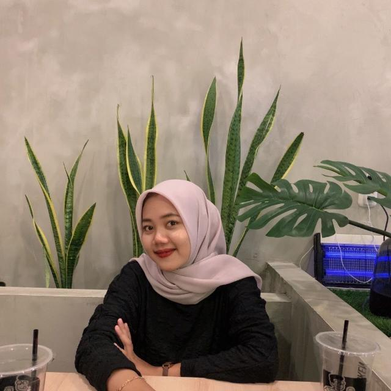

HARI INI TENTANG KAMU
Untuk Nova Virgie ♡

Selamat ulang tahun! 🎂
Haii, Nova. Mungkin tahun ini aku belum bisa menyampaikan ucapan ini secara langsung. Jarak dan pekerjaan membuatku belum bisa ikut merayakan harimu dari dekat, tapi bukan berarti aku lupa dengan hari spesialmu.
Di hari bertambahnya usiamu, aku berharap semoga kamu selalu sehat, bahagia, dimudahkan dalam setiap urusan, dan dikelilingi orang-orang yang tulus menyayangimu.
Teruslah mengejar hal-hal yang kamu impikan. Jangan terlalu keras pada diri sendiri, dan jangan lupa menikmati hal-hal kecil yang membuatmu tersenyum.
Anggap saja halaman kecil ini sebagai tanda bahwa dari jauh, ada seseorang yang ikut mendoakan hal-hal baik untukmu. Semoga suatu hari nanti kita bisa merayakannya secara langsung. 💗
Dari jauh, seseorang yang diam-diam mengagumimu.
↶ Lihat lagi dari awal